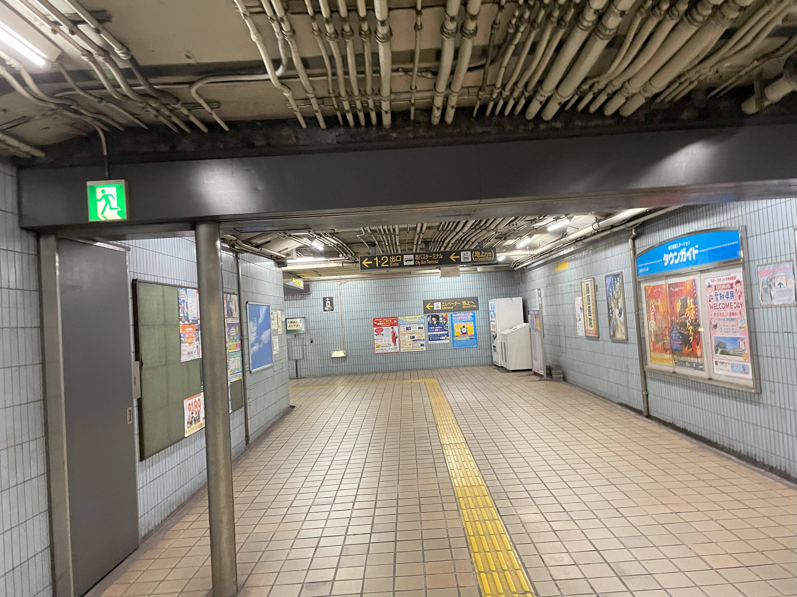
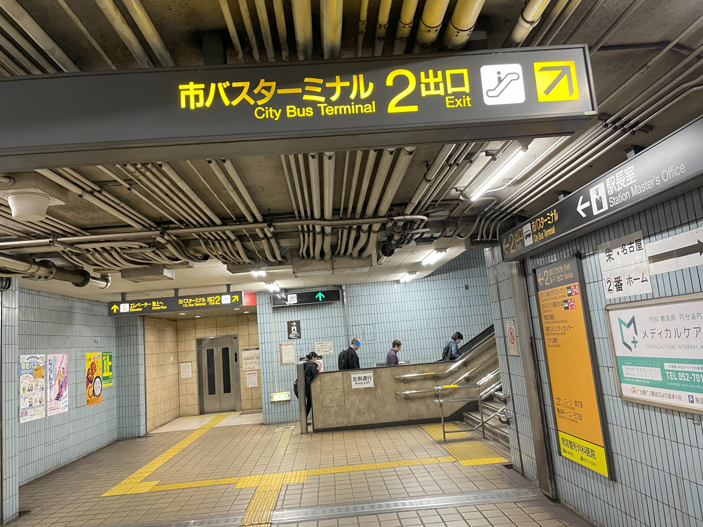
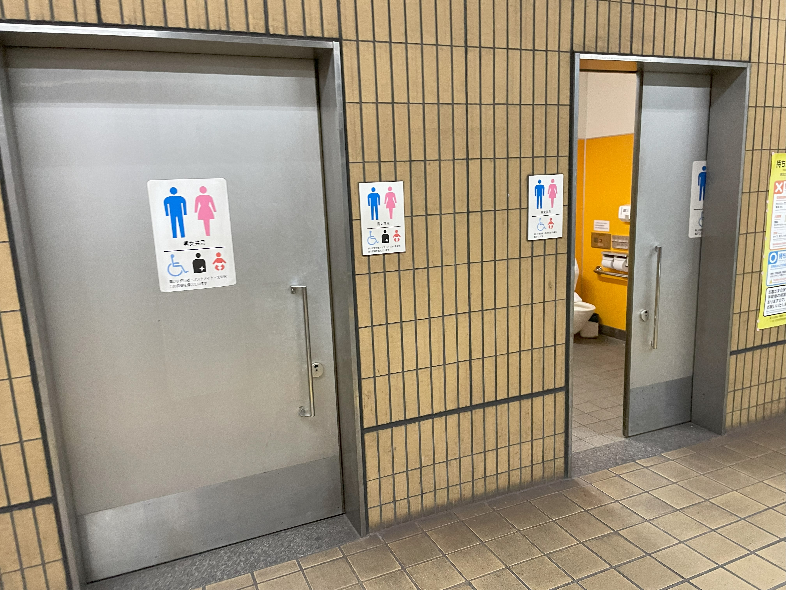
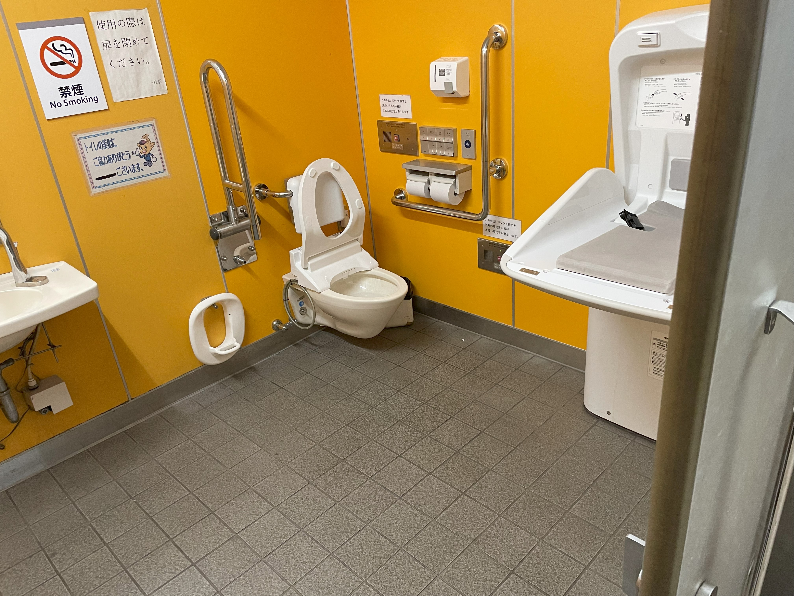
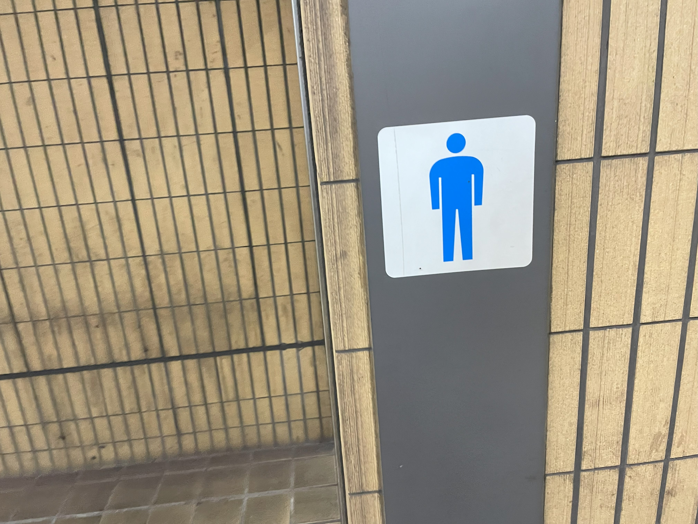
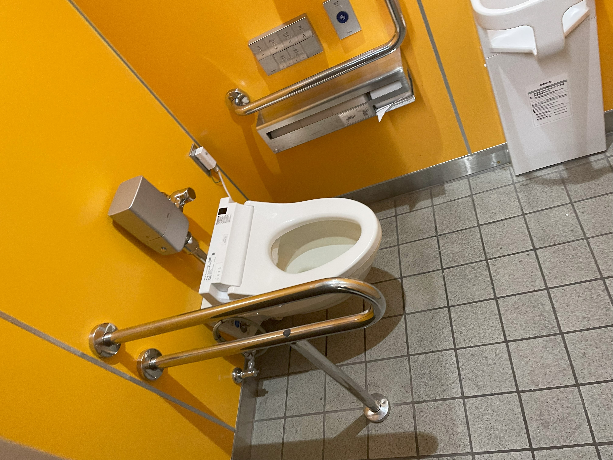

<1>一社駅に降りると、ホームの真ん中ら辺に出口がある。（ホームにはその出口しかないから迷わないはず）その出口に進み、出口2にすすめ！！ 
↓
<2>真っ直ぐいけ！！（出口2にいけ！！！）
階段のぼれ！！！！！！ 
↓
<3>障碍者トイレ2つある 
↓
<4>障碍者トイレの中はこんな感じ 
↓
<5>障碍者トイレの近くに、トイレがある（男子トイレは洋式トイレ1つ） 
↓
<6>洋式トイレ1つ  ミッションコンプリート！！！！！！ おつ！！！！！！！！！！